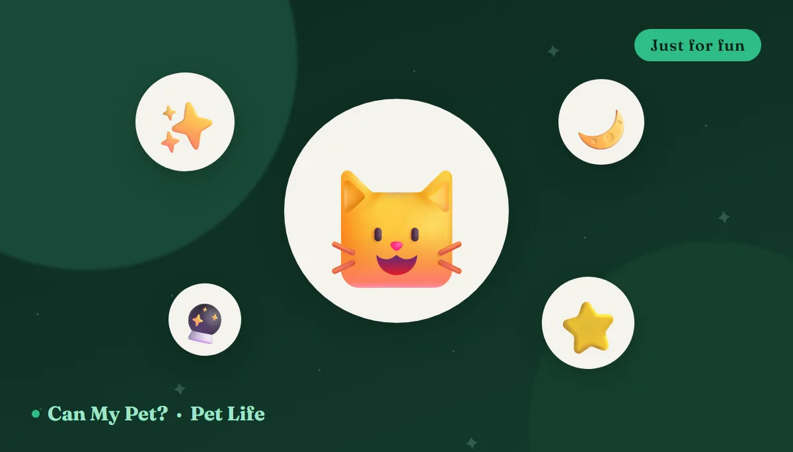

Cat Zodiac Signs: What Your Cat's "Sign" Says About Them
🪄 Just for fun — this one's entertainment, not science
Cats already behave like they were assigned a cosmic destiny at birth — so of course they have star signs. Is your Scorpio tabby plotting something? Does your Libra ragdoll genuinely refuse to pick a favorite human? Almost certainly coincidence, but a very entertaining one. Below is a warm, tongue-in-cheek tour of all twelve cat signs, plus a cat-safe treat to match each one. Then, because we're CanMyPet, we'll tell you what actually shapes a cat's personality.
How to find your cat's sign
Simple: take your cat's date of birth — or the estimated birthday your shelter or vet gave you — and match it to the ranges below, exactly as you would for a person. No birthday on record? Plenty of adopted cats don't have one. Just pick the sign whose description sounds most like your cat; it's a game with no rules and no wrong answers. If you're fuzzy on your cat's age in the first place, our pet age calculator can help you ballpark it in human years.
The 12 cat zodiac signs
♈ Aries — The 3AM Sprinter
Bold, fast, and completely unbothered by your sleep schedule. The Aries cat treats the hallway as a racetrack, the curtains as a climbing wall, and your ankles as fair game. Fearless, funny, and permanently set to "go."
🍗 Treat match: a shred of plain cooked chicken after all that cardio.
♉ Taurus — The Sunbeam Loyalist
Steady, stubborn, and a devoted student of comfort. The Taurus cat has claimed one specific patch of sun, one specific blanket, and one specific dinner time — and all three are non-negotiable. Move them at your peril.
🎃 Treat match: a tiny spoon of plain pumpkin — cozy and gentle on the stomach.
♊ Gemini — The Two-Personality Cat
Purring on your lap one minute, biting your hand the next, and genuinely confused about why you're surprised. The Gemini cat is curious, chatty, and up for anything — briefly. Attention span of a hummingbird, heart of a gossip.
🫐 Treat match: a single blueberry to bat across the kitchen floor.
♋ Cancer — The Velcro Cat
Soft, sensitive, and always exactly where you are. The Cancer cat supervises your shower, sleeps on your chest, and knows you've had a bad day before you've said a word. Home is you, and they'd rather you never left it.
🐟 Treat match: a small flake of cooked salmon — comfort food, feline edition.
♌ Leo — The Household Monarch
Confident, dramatic, and quietly certain this is their house and you're staff. The Leo cat sits in the middle of the room, on the highest surface, in the best light, and waits to be admired. They will be. Big personality, bigger opinions.
🧀 Treat match: a pea-sized crumb of cheese — royalty deserves flair (and lactose tolerance varies, so keep it tiny).
♍ Virgo — The Immaculate Overthinker
Meticulous, particular, and running quality control on the entire household. The Virgo cat grooms for a living, has firm views on litter box cleanliness, and gives you a slow blink of disappointment when dinner is late by four minutes.
🥕 Treat match: a soft, cooked sliver of carrot — tidy, orderly, exactly right.
♎ Libra — The Diplomatic Fluff
Charming, even-tempered, and determined to be everyone's friend without ever picking a favorite. The Libra cat greets guests, tolerates the dog, and floats through the household spreading a general sense that things are fine.
🍈 Treat match: a fair little cube of cantaloupe — mild, balanced, shared with all.
♏ Scorpio — The Intense One
Watchful, magnetic, and impossible to read. The Scorpio cat stares at the wall a beat too long, bonds ferociously with exactly one person, and remembers everything — especially who took them to the vet. Loyal beyond measure, once you've earned it.
🐟 Treat match: a rare, dramatic flake of tuna — occasional treat, never a meal.
♐ Sagittarius — The Escape Artist
Adventurous, optimistic, and forever eyeing the front door. The Sagittarius cat wants to see the balcony, the garage, the neighbor's roof and whatever is behind the fridge. Boundless curiosity, deeply questionable risk assessment.
🍠 Treat match: a soft morsel of cooked sweet potato for the road.
♑ Capricorn — The Ancient Soul
Composed, dignified, and somehow world-weary since kittenhood. The Capricorn cat keeps a schedule, disapproves of nonsense, and watches the chaos of the household from a high shelf with the air of someone who has seen empires fall.
🥚 Treat match: a bite of plain cooked egg — sensible, classic, no fuss.
♒ Aquarius — The Weird Genius
Independent, inventive, and gloriously strange. The Aquarius cat ignores the $30 toy in favor of a bottle cap, drinks only from the tap, and has one unexplainable ritual that no vet, trainer or friend has ever been able to account for.
🍤 Treat match: one small cooked shrimp — unexpected and a little offbeat.
♓ Pisces — The Dreamy Loaf
Gentle, intuitive, and mostly asleep. The Pisces cat drifts between sunbeams in a soft private world, purrs at nothing in particular, and appears at your side the instant you're sad. Sixteen hours of napping, eight hours of pure affection.
🍉 Treat match: a seedless nibble of watermelon — sweet, light, dreamy.
So what actually shapes a cat's personality?
Here's the part we can stand behind. Cat personality is real, measurable and well studied — researchers in Australia and New Zealand surveyed over 2,800 cats and identified five consistent personality dimensions, nicknamed the "Feline Five": neuroticism, extraversion, dominance, impulsiveness and agreeableness. Those traits hold steady across time and situations. The stars, however, have nothing to do with them.
That early-socialization window is the single most under-appreciated fact in cat behavior. A kitten gently handled by several different people between two and seven weeks old is far more likely to grow into a confident, affectionate adult — which is why two cats from the same litter can turn out wildly different. If your rescue cat is shy, that's history, not horoscope, and patient routine does more than any star chart.
Want the evidence-based version of "what type is my cat"? We wrote a whole guide on it: cat personality types, and which one is yours. And if you want to know what your cat is telling you right now, learning their body language — tail position, ear angle, that slow blink — will tell you infinitely more than any zodiac ever could.
Fun ways to play with your cat's "sign"
Half the joy is the game. Post a photo of your cat captioned with their sign, pick a cosmic name from our pet name generator ("Luna" for a dreamy Pisces, "Nova" for a Leo who demands the spotlight), or invent a weekly horoscope: "Venus is in retrograde, so your Taurus will sit on the laptop with unusual conviction." It's silly, it's harmless, and it's a lovely excuse to celebrate exactly how strange and wonderful your cat already is.
Frequently asked questions
Is the cat zodiac real?
No — it's purely for fun. There's no scientific evidence that a cat's birth date influences its personality. Real feline temperament comes from genetics, breed tendencies, the father's temperament, early socialization (roughly weeks 2–7) and daily environment. Enjoy the zodiac as entertainment, not as a guide to your cat's behavior.
How do I find my cat's zodiac sign?
Match your cat's date of birth — or the estimated birthday from your shelter or vet — to the same date ranges used for people, listed above. Many adopted cats have no known birthday, so just pick the sign that sounds most like them. It's a game.
What actually determines my cat's personality?
Genetics and breed, the father's temperament, how much gentle human handling they got as young kittens, and their ongoing environment and routine. Our cat personality types guide covers the research-backed picture, including the "Feline Five" traits.
Can I give my cat the "treat match" for their sign?
The treats listed are all cat-safe in very small amounts — but cats are obligate carnivores, portions should stay tiny, and some cats are lactose intolerant or have sensitive stomachs. Keep treats to about 10% of daily calories and check any new food in our food checker first. This guide is for information and fun, not veterinary advice.
Do cats and dogs have different zodiac personalities?
In this game, absolutely — a Leo dog wants an audience, a Leo cat expects one. If you've got both at home, see our companion piece on dog zodiac signs and compare notes.